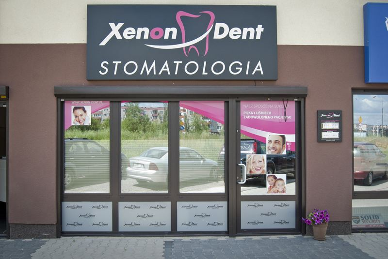
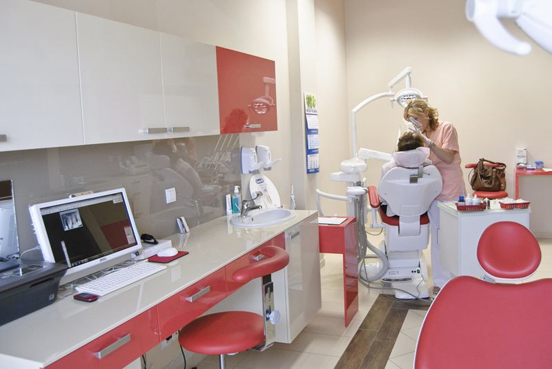
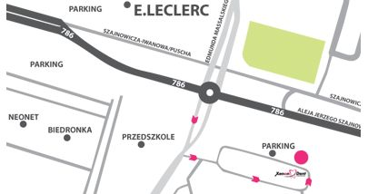

Gabinet stomatologiczny Xenon-Dent w Kielcach na Osiedlu Vis a Vis. Nowoczesne standardy leczenia, indywidualny plan profilaktyczno-leczniczy i wizyty umawiane pod Państwa czas.

Gabinet stomatologiczny Xenon-Dent przy ul. Szajnowicza-Iwanowa 13E w Kielcach (Osiedle Vis a Vis) powstał z myślą o pacjentach wymagających, ceniących bezpieczeństwo i komfort leczenia. Wprowadzając nowoczesne standardy stomatologii, udowadniamy, że stres związany z wizytą u dentysty odchodzi w przeszłość.
Największą uwagę przykładamy do jakości usług. Naszym celem jest komfort i zadowolenie Pacjentów, dlatego oferujemy indywidualne podejście i całościowy plan profilaktyczno-leczniczy. Każda wizyta jest wcześniej ustalana zgodnie z Państwa preferencjami i potrzebami.
Stale przechodzimy szkolenia i kursy, stosujemy materiały najwyższej jakości i bezpieczne techniki zabiegowe. Gabinet wyposażony jest w nowoczesne urządzenie do RTG i radiowizjografii cyfrowej, które daje szerokie możliwości diagnostyczne przy dawce promieniowania zredukowanej o około 90% w stosunku do zdjęcia klasycznego.
lek. dent. Agnieszka Królik-Bulińska

W miłej atmosferze świadczymy kompleksowe i profesjonalne usługi dentystyczne. Oferujemy również inne świadczenia stomatologiczne - zapraszamy do kontaktu.
Gabinet, poczekalnia i wyposażenie - zdjęcia z obecnej strony.
Krótkie, praktyczne wskazówki dla Pacjentów.
Piaskowanie to jeden z podstawowych zabiegów w gabinecie. Polega na usuwaniu osadów z zębów za pomocą piaskarki - urządzenia kierującego strumień drobnego proszku i wody.
Czytaj więcej →Po usunięciu zęba trzeba w sposób szczególny zadbać o higienę. Zagryzaj gazik przez 30 minut, aby zatamować krwawienie, i unikaj płukania ust w pierwszej dobie.
Czytaj więcej →Wydawałoby się, że to czynność prosta, a wciąż zbyt wiele osób popełnia podstawowe błędy przy szczotkowaniu. Sprawdź, na co zwrócić uwagę.
Czytaj więcej →Xenon-Dent - gabinet stomatologiczny
ul. Szajnowicza-Iwanowa 13E lok. 2
25-636 Kielce (Osiedle Vis a Vis)
lek. dent. Agnieszka Królik-Bulińska

Otwórz nawigację w Google Maps →